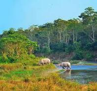

Chitwan district is one of the 77 districts of Nepal . This district is located in the south-western part of Bagmati province of Nepal. The headquarters of this district is Bharatpur which is the fourth largest city of Nepal. Most of the territory of this district lies in the Chitwan valley, while the Mahabharata mountain range lies in its northern part. Bharatpur is a commercial city in the central western region of Nepal. There are large commercial and service organizations in this area. Bharatpur is considered to be the focal point of higher education, business and transportation for the Nepali people living in the central region. Narayanghat is another big market of Chitwan situated on the banks of Narayani river . The area of Chitwan district is 2238.39 square kilometers.
